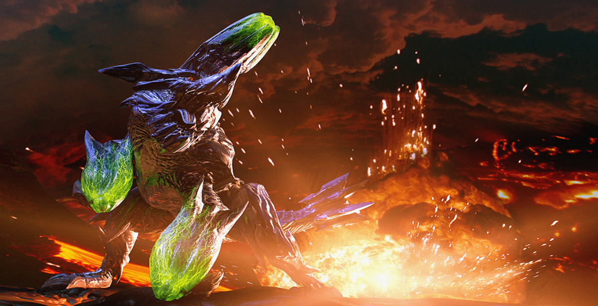

My Favorite Monsters From Monster Hunter
By
Daniel
Images taken from google



![a still image from the 3d digital game monster hunter of a man standing in front of a giant monster t-rex in a dark cave. the man is up close and is facing away towards the monster showing only the back of his head and left shoulder, he has short dark hair, wearing goggles, and has a leather coat. the t-rex monster is facing forward and has blue and red scales. the blue scales cover most of the body as this thick, powerful, and/or sharp armour plating and spikes. it has heavy plated jaws with fang like tusks and has its mouth open showing a row of razor fangs. in the back its huge blade like tail is visible.](Glavanus.jpg)
![a still image from the 3d digital game monster hunter of three armored people with fighting a big red and dark beige flying wyvern in a dense forest. the man in front is wearing blue armor and is using a giant axe like weapon, another person farther up front to the left with light colored clothing with a huge hammer, and the third person is on the right, behind some bones so only his upper body is visible, with red armor and is hitting the wyvern with a red lance making sparks fly. The wyvern is huge taking most of the image and is diving towards the camera mouth open and talons facing forward ready to strike. the under part of its body is a dark beige with dark markings on the bottom of its wings and tail. on the front of the wing near the tip is lined with black spikes. the top of its head is red with spikes, and the tips along with the tip of its snout are black](Rathalos.jpg)